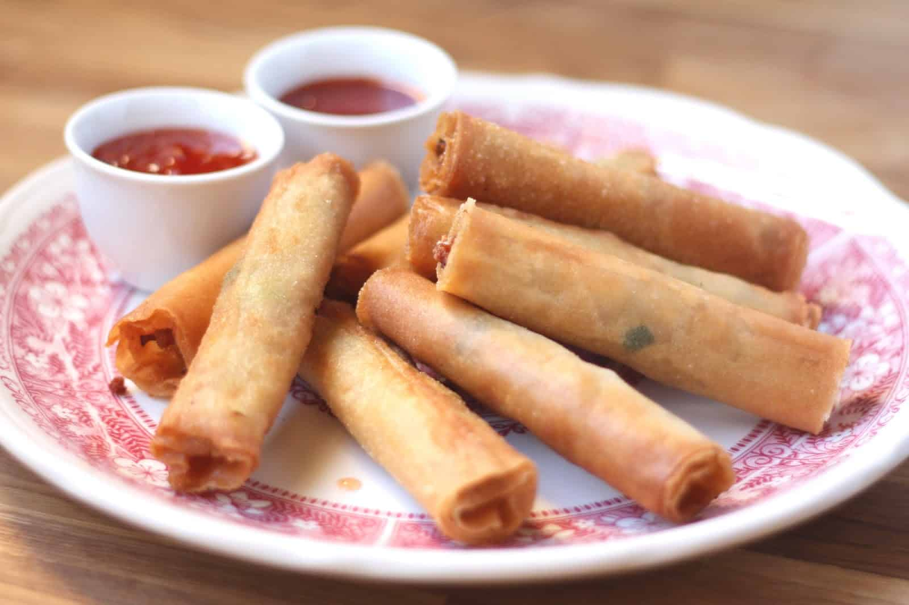

Lumpia
Crispy, savory, and endlessly snackable — Lumpia are classic Filipino spring rolls, perfect as an appetizer, party food, or a crunchy treat any time of the day.
Preparation:
30-40 minutes active prep
Cook:
20-30 minutes (frying)
Total:
About 1-1.5 hours
Ingredients:
- 1 pound (450g) ground pork (or beef, chicken, or a mix)
- 1/2 cup carrots, finely grated or minced
- 1/2 cup onions, finely chopped
- 1/2 cup green onions, chopped
- 1/2 cup cabbage, finely shredded (optional)
- 3-4 cloves garlic, minced
- 1 egg
- 1 tablespoon soy sauce
- 1 tablespoon oyster sauce (optional, for extra flavor)
- Salt and pepper, to taste
- 25-30 lumpia wrappers (spring roll wrappers)
- Oil, for deep frying
Instructions:
- In a large bowl, mix the ground meat, carrots, onions, green onions, cabbage (if using), garlic, egg, soy sauce, oyster sauce, salt, and pepper until well combined.
- Separate the lumpia wrappers carefully. Place one wrapper on a clean surface, and put about 1-2 tablespoons of filling near one edge.
- Roll the wrapper tightly around the filling, folding in the sides as you go. Seal the edge with a little water or beaten egg.
- Repeat with the remaining filling and wrappers. (You can freeze extra rolls for later at this point.)
- Heat oil in a deep pan or skillet over medium heat. Fry lumpia in batches, turning occasionally, until golden brown and crispy, about 3-5 minutes.
- Drain on paper towels to remove excess oil.
- Serve hot with sweet chili sauce, banana ketchup, or vinegar dipping sauce.